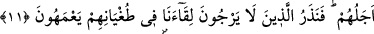

İNSANIN TABÎATI
11. Eğer Allah insanlara hayrı acele istedikleri gibi şerri de acele verseydi,
şüphesiz onların ecelleri bitirilmiş olurdu. Fakat biz, bize kavuşmayı ummayanları
azgınlıkları içinde bocalar bir halde bırakırız.
12. İnsana bir zarar dokunduğu zaman yatarak, oturarak veya ayakta durarak
bize duâ eder. Ama biz ondan sıkıntısını giderince sanki kendisine dokunan bir
sıkıntıdan dolayı bize duâ etmemiş gibi geçer gider. İşte böylece haddi aşanlara
yaptıkları şeyler güzel gösterildi.
“Eğer Allah insanlara hayrı acele istedikleri gibi şerri de acele verseydi,”
“  (acele vermek)” bir şeyi vaktinden öne almaktır. “ ise acele
(acele vermek)” bir şeyi vaktinden öne almaktır. “ ise acele
istemektir. “Şer”den maksad, azabdır. Azâbın “şer” diye isimlendirilmesi
cezalandırılacak kişi hakkında hoş olmayan bir durumdur.
Rivayet edilmiştir ki Nadr b. Hâris, Hz. Peygamber (s.a.)’in peygamberliğini inkar
ederek: “Ey Allah’ım, eğer Muhammed peygamberlik iddiasında doğru ise üzerimize
gökten taş yağdır yahut acı bir azab gönder.” dedi. İşte müşrikler Hz. Peygamber’in
nübüvvet lisanından tehdid edildikleri azabın acele gelmelerini istiyorlardı. Bunun
üzerine Allah Teâlâ şöyle buyurdu: “Eğer Allah insanlara hayrı” rahmet ve afiyeti
“acele istemeleri gibi şerri” acele istedikleri vakit azâbı “acele verseydi, şüphesiz
onların ecelleri bitirilmiş olurdu.” Yani azabları için tayin edilmiş olan müddetleri
hemen bitirilmiş olurdu. Hemen öldürülüp helak ediliverirlerdi. Göz açıp kapayacak
kadar bile kendilerine mühlet verilmezdi. Çünkü onların dünyadaki terkipleri,
istedikleri acele azaba tahammül edemez. Fakat biz acele etmez ve işlerini bitirmeyiz.
“Fakat biz,” öldükten sonra dirilmeyi inkar ettikleri için “bize kavuşmayı
ummayanları” buluşma yeri olan ahirette cezamızı beklemeyenleri “azgınlıkları” bize
kavuşmayı ummamaları, öldükten sonra dirilmeyi ve cezayı inkar etme halleri “içinde
bocalar”; şaşkın ve mütereddid “bir halde bırakırız.” Yani hemen acele etmez, işlerini
bitirmez ve onları terk ederiz.